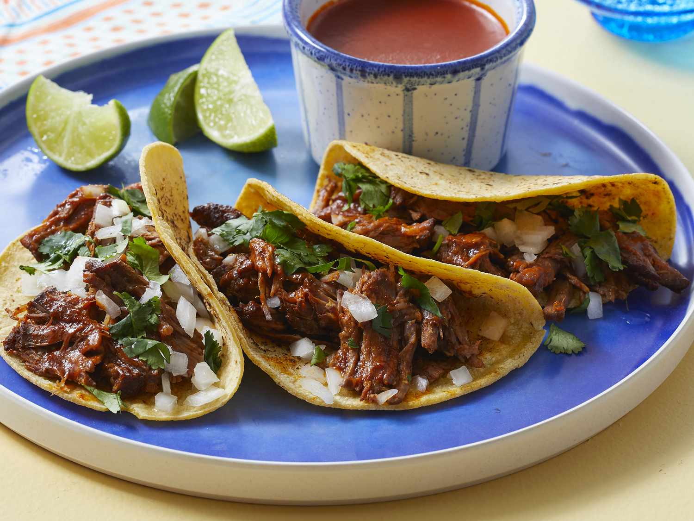

Birria de Res Tacos

Mexican birria taccos, Jalisco-style, made with braised beef that's slow-cooked
in a fragrant 3-chile sauce with a delicious spice mix. This recipe was
obtained from allrecipes
(link).
Ingredients
- 6 dried guajillo chile peppers, seeded
- 4 dried chile de arbol peppers, stemmed and seeded
- 2 dried ancho chiles, stemmed and seeded
- 1 tablespoon olive oil, or as needed
- 4 medium roma tomatoes
- 2 tablespoons white vinegar
- 2 cloves garlic
- 2 teaspoons ground black pepper
- 4 whole cloves
- 1 pinch ground cinnamon
- 1 pinch ground cumin
- 1 pinch ground thyme
- 1 pinch dried marjoram
- 1 pinch ground thyme
- 1 pinch dried oregano
- 1 pinch salt
- 4 pounds beef chuck roast
- salt and freshly ground black pepper to taste
- 18 corn tortillas
- 1 large white onion, finely chopped
- 1 bunch fresh cilantro, chopped
- 1 cup shredded queso asadero (white mexican cheese) (optional)
Steps
-
Gather all ingredients. Preheat the oven to 325 degrees F (165 degrees C). Fill a
pot with water and bring to a boil.
-
Start the sauce: Add guajillo, arbol, and ancho chile peppers to the boiling
water; boil for 5 minutes.
-
Remove pot from the heat and allow peppers to soak until cool. Drain, reserving
1/4 cup of the cooking water.
-
Meanwhile, sear the meat: Rinse beef and pat dry with paper towels. Cut beef
into chunks if desired, and season with salt and pepper.
-
Heat oil in a Dutch oven over medium-high heat. Add beef and cook until
browned on all sides, about 10 minutes. Remove from the heat.
-
While the beef is searing, continue the sauce: Line a heavy cast-iron grill pan or
griddle with aluminum foil and place over high heat. Arrange tomatoes in a
single layer on top. Grill until tomato skin is burned on all sides and begins to
peel, 3 to 5 minutes.
-
Place cooled chile peppers into a blender. Add grilled tomatoes, vinegar, garlic,
2 teaspoons black pepper, cloves, cinnamon, cumin, thyme, marjoram, oregano,
and salt in a blender. Pour in the reserved 1/4 cup of chile water and blend until
smooth.
-
Strain chile sauce through a mesh strainer and pour over browned meat in the
Dutch oven, turning the roast so it is completely covered with sauce; cover with a lid.
-
Bake in the preheated oven, basting meat every 45 minutes with sauce, until
birria begins to fall apart, 3 to 4 hours. Remove the lid and bake, uncovered,
until birria is crispy on top, about 20 minutes. Remove from oven, cover with 2
layers of aluminum foil, and allow to rest in a warm area for 10 minutes.
-
Remove meat to a cutting board and strain off any fat from the sauce. Shred
meat with two forks, then return meat to the pot and stir with the sauce to combine.
-
Assemble and heat tacos: Fill each tortilla with birria and top with Mexican cheese,
chopped onion, and cilantro. Warm tortillas on a griddle, flipping until both sides
are crispy and cheese is melted.
-
Serve with extra sauce on the side for dipping.
Home